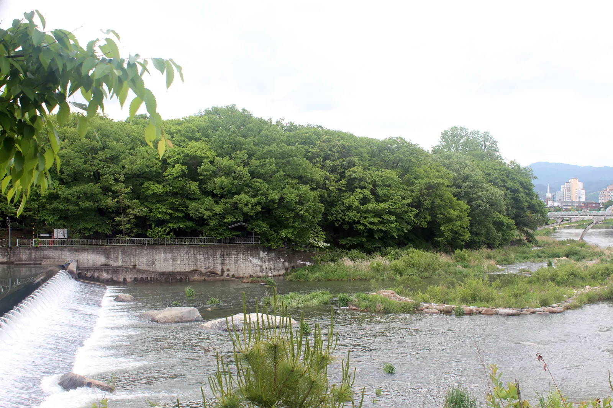
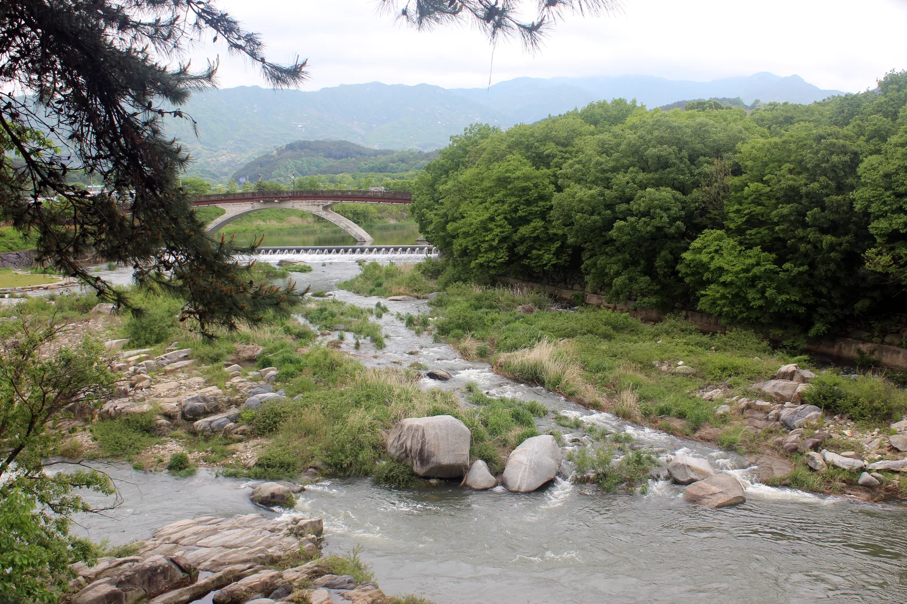
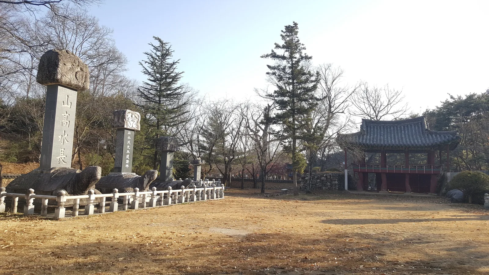
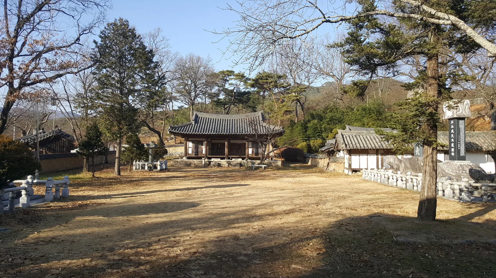
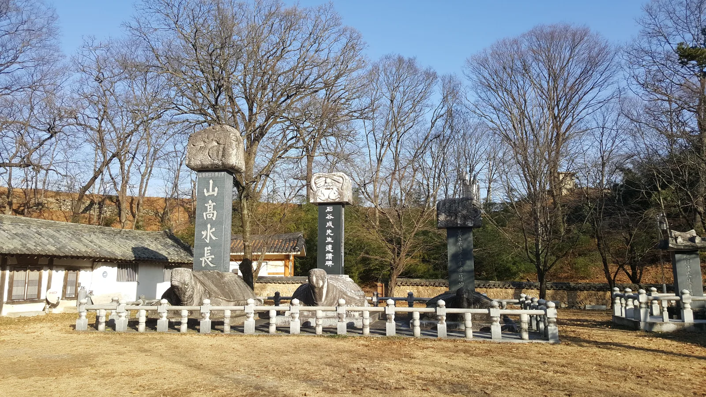
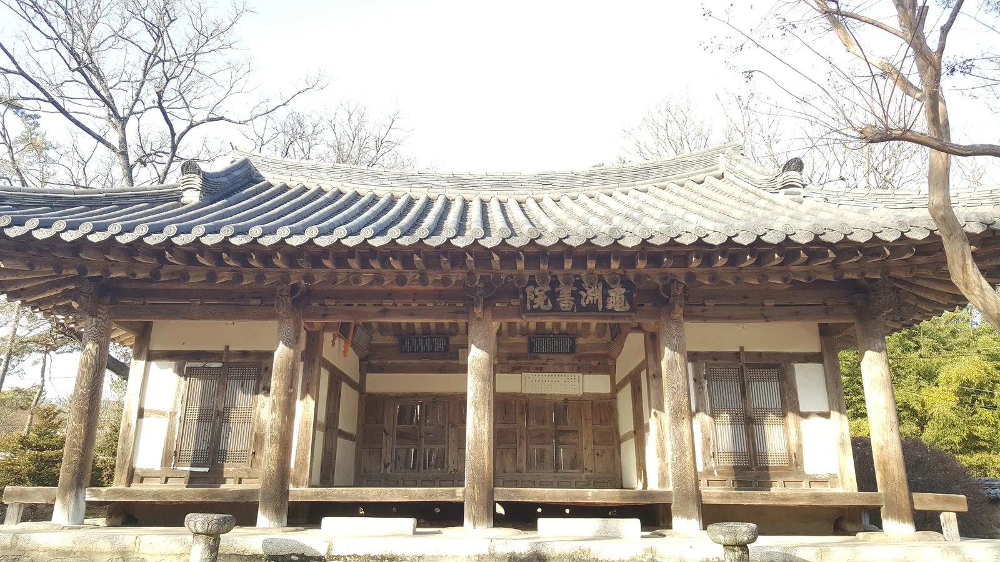

▲ 천연기념물 제154호로 지정된 함양 상림. 신라 최치원이 조성한 국내 최고(最古)의 인공림이다
1100여 년 전 신라 진성여왕 때, 지금의 함양군 태수로 부임한 고운 최치원은 골칫거리 하나를 안고 있었다. 마을을 가로지르는 위천이 해마다 범람해 논밭을 휩쓸어 갔던 것. 최치원은 둑을 쌓고 그 위에 나무를 빼곡히 심어 물길을 다스렸다. 그렇게 만들어진 인공림이 함양 상림(上林)이다. 우리나라에서 가장 오래된 인공림으로 꼽히며, 1962년 천연기념물 제154호로 지정됐다. 그리고 여기서 자동차로 30분 남짓 거리에는 화강암 계곡과 정자가 어우러진 명승 거창 수승대가 있다. 두 곳을 하루 코스로 묶어 다녀오는 법을 순서대로 정리했다.
1. 함양 상림 — 최치원이 만든 21만㎡ 숲

▲ 위천을 따라 조성된 함양 상림. 최치원이 홍수를 막기 위해 둑을 쌓고 나무를 심은 자리다 ⓒ Wikimedia Commons
상림은 면적 약 21ha(약 1.6km 길이, 폭 80~200m) 규모로, 120여 종 2만여 그루의 나무가 자라는 활엽수 숲이다. 원래는 함양읍을 가로질러 아래쪽 하림(下林)까지 이어지는 하나의 숲이었으나, 세월이 흐르며 중간이 끊겨 지금의 상림만 남았다는 것이 함양군 설명이다. 계단이 없는 평탄한 산책로여서 휠체어나 유모차로도 무리 없이 걸을 수 있고, 2018년 관광지로 정비된 상림공원 일대는 가족 단위 산책 코스로 자리 잡았다.
| 항목 | 내용 |
|---|---|
| 지정 | 천연기념물 제154호(1962년) |
| 조성 | 신라 진성여왕 대, 최치원이 태수로 재임 중 조성 |
| 규모 | 약 21ha, 길이 1.6km, 폭 80~200m |
| 수목 | 120여 종, 약 2만 그루(활엽수 위주) |
| 입장료·주차 | 무료 |
| 주소 | 경남 함양군 함양읍 필봉산길 49 |
2. 단풍철 상림 — 최치원 역사공원과 물줄기

▲ 상림 인근 위천을 가로지르는 다리. 강 건너로 정자가 보인다 ⓒ Wikimedia Commons
상림 안쪽에는 최치원을 기리는 최치원 역사공원이 조성돼 있어, 숲길을 걷다 잠시 들러보기 좋다. 봄에는 연둣빛 새잎, 여름에는 짙은 그늘, 가을에는 붉고 노랗게 물든 활엽수가 계절마다 다른 얼굴을 보여주는데, 특히 가을철에는 상림을 상징하는 표석 주변 나무들까지 단풍이 들어 사진 명소로 꼽힌다. 다만 정확한 단풍 절정 시기는 그해 기온에 따라 달라지므로, 방문 직전 함양군청 관광안내(055-960-5756)로 확인하는 편이 안전하다.
✅ 함양 상림, 가기 전 체크리스트
· 천연기념물 154호, 신라 최치원이 조성한 국내 최고(最古) 인공림
· 면적 약 21ha, 계단 없는 평탄한 산책로
· 입장료·주차 모두 무료
· 문의: 함양군청 관광과 055-960-5756
3. 거창 수승대 — 화강암 계곡과 거북바위

▲ 수승대 구연서원 경내의 산고수장비. 거북 모양 받침돌 위에 비석이 서 있고, 오른쪽으로 관수루가 보인다 ⓒ Wikimedia Commons
상림에서 자동차로 30분 남짓 거리인 거창군 위천면에는 명승 제53호 수승대가 있다. 삼국시대에는 백제와 신라의 국경지대여서, 백제 사신이 신라로 떠날 때 돌아오지 못할 것을 근심하며 전송했다는 뜻으로 '수송대(愁送臺)'라 불렸다는 이야기가 전한다. 이후 조선 중종 때 요수 신권 선생이 이곳에 구연서당을 세우고 제자를 길렀고, 1543년 퇴계 이황이 이름이 아름답지 않다며 음이 비슷한 '수승대(搜勝臺)'로 고칠 것을 권하는 시를 보내면서 지금의 이름이 됐다.

▲ 구연서원 강학 공간과 마당. 요수 신권 선생이 제자를 가르치던 자리다 ⓒ Wikimedia Commons
경내에서 가장 눈에 띄는 것은 높이 10m, 넓이 50㎡에 이르는 화강암 바위 거북바위(구암대)다. 생김새가 거북을 닮았다고 붙은 이름으로, 바위틈 암굴은 수십 명이 비를 피할 만큼 넓고, 옛 선비들이 학문을 닦고 풍류를 즐긴 흔적이 남아 있다. 거북바위 건너편에는 아궁이가 있는 방을 정자 안쪽에 들인 독특한 구조의 요수정이 자리해, 수승대에서 가장 사진이 잘 나오는 자리로 꼽힌다.
4. 구연서원·관수루 — 거북 모양 비석 받침이 남은 이유

▲ 구연서원 경내 비석 받침을 거북 모양으로 조각했다. 대의 모양이 거북과 같다 하여 옛 이름도 암구대였다 ⓒ Wikimedia Commons

▲ '구연서원(龜淵書院)' 현판이 걸린 강당. 구연(龜淵)은 거북 연못이라는 뜻이다 ⓒ Wikimedia Commons
경내 곳곳에 놓인 비석들은 하나같이 거북 모양 받침돌 위에 서 있다. 이는 이 일대를 '구연동(龜淵洞)'이라 부른 데서 비롯된 것으로, 거북바위와 함께 수승대 전체를 관통하는 상징이다. 구연서원 안에는 사우·내삼문·관수루·전사청·요수정·함양제 등이 남아 있으며, 유림과 거창 신씨 요수종중이 공동으로 관리하고 있다. 솔숲과 맑은 계류, 화강암 바위가 어우러진 경관 덕분에 여름철 피서지로도 잘 알려져 있지만, 가을에는 인적이 한결 뜸해 조용히 산책하기 좋다.
| 항목 | 내용 |
|---|---|
| 지정 | 명승 제53호(2008년) |
| 주요 시설 | 거북바위(구암대), 요수정, 관수루, 구연서원 |
| 입장료·주차 | 무료(전통정원 등 일부 유료 시설 제외) |
| 주소 | 경남 거창군 위천면 수승대관광지 일대(은하리) |
| 함양 상림과의 거리 | 자동차로 약 30분(30km 안팎) |
5. 함양·거창 하루 코스 — 이렇게 이으면 된다
두 곳 모두 경남 서부에 자리해 자동차로 이동하기 편하다. 오전에 함양 상림을 여유롭게 걷고, 점심을 먹은 뒤 거창 수승대로 넘어가 거북바위와 구연서원, 요수정을 둘러보는 일정이면 하루 코스로 충분하다. 함양읍내에는 한옥 고택과 서예 관련 명소도 있어, 시간이 남으면 상림 인근 고택 거리를 함께 걷는 여행객도 많다. 반대로 거창 쪽에서 출발해 오전에 수승대를 먼저 본 뒤 오후에 함양 상림으로 이동하는 역방향 코스도 무리가 없다.
한국민족문화대백과사전에서 거창 수승대 정보 확인 가능✅ 함양 상림·거창 수승대, 가기 전 체크리스트
· 함양 상림: 천연기념물 154호, 최치원이 조성한 인공림, 면적 약 21ha, 입장료·주차 무료
· 거창 수승대: 명승 53호, 거북바위·요수정·구연서원이 핵심 볼거리
· 두 곳 모두 계곡·숲 중심이라 가을 단풍철 방문에 적합
· 자동차로 약 30분 거리라 하루 코스로 묶기 좋음
· 방문 전 함양군청(055-960-5756)·거창군청 관광 담당 부서로 최신 정보 확인 권장